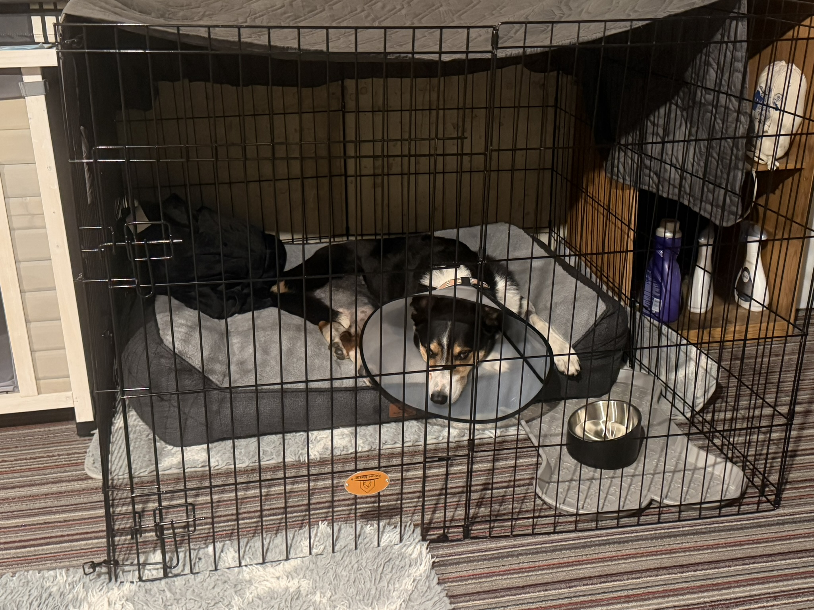

He anticipated the event
Oliver went to the basement around 7:00 p.m. because he appeared certain fireworks were coming, even before I heard them.
That told me I was not managing only a reaction to sound. I was also managing anticipation.
FIREWORKS & RECOVERY
Oliver's safest place during fireworks was his basement bunker. After TPLO, the stairs to reach it were one of the movements I was trying to limit. The problem was not choosing between a good option and a bad one. It was deciding which risk mattered most in that moment.
This is Oliver's personal experience. It is not behavioral, medication, stair, or veterinary guidance. Ask your own veterinary team how to plan for severe noise anxiety during orthopedic recovery.
THE LESSON I WOULD PLAN FOR EARLIER
Oliver had used the basement bunker for years during storms and fireworks. It was not a new preference created by surgery. It was the place he consistently chose when he was frightened.
After TPLO, the simplest orthopedic plan would have been to keep him upstairs and avoid the staircase. The problem was that preventing access did not make him feel safe upstairs.
His anxiety affected panting, pacing, eating, resting, bathroom timing, medication, and movement. A plan focused only on the knee could create a different kind of risk if he remained highly distressed.
WHEN SEVERE WEATHER CHANGED THE PLAN
The basement was already part of Oliver's storm routine, but orthopedic recovery meant I could not treat the move as a simple location change.
I recreated a contained recovery area downstairs so severe-weather safety and postoperative restrictions could be managed together.
This was not Oliver's normal bunker setup. It was a temporary storm-recovery arrangement created because tornadoes were approaching.

JUNE 27, 2026
Fireworks began around 1:00 p.m., and Oliver immediately wanted the basement. I allowed him to use the bunker because that was where he had always gone to feel safe.
Around 6:00 p.m., I brought him upstairs for a walk. More fireworks started after we returned. I was able to get him to eat dinner before he went downstairs again.
Around 10:00 p.m., I brought him upstairs for medication. He urinated quickly but would not eat normally. He did accept his pills wrapped in cheese. I gave the prescribed as-needed medication I was using for these situations and allowed him to return to the basement.
He came upstairs around midnight and stayed upstairs.
WHAT MADE THAT DAY HARDER
That day, I also noticed increased limping and later saw Oliver licking near his rear area, with the fur standing up where he had been licking.
Those observations mattered, but the current record does not establish exactly what he was licking, why the limp increased, or whether the changes were evaluated by a veterinarian.
I am preserving that uncertainty because it reflects the real problem owners face during a stressful recovery night: several things may be happening at once, and the cause is not always obvious from home.
JULY 7, 2026
Oliver went to the basement around 7:00 p.m. because he appeared certain fireworks were coming, even before I heard them.
That told me I was not managing only a reaction to sound. I was also managing anticipation.
I brought him upstairs around 10:00 p.m. for medication, and he returned to the bunker afterward.
I tried to limit unnecessary transitions instead of repeatedly asking him to leave the place where he had settled.
Around 1:30 a.m., he came upstairs while Baxter was being let outside. He urinated and defecated, then rested in the family room.
Later, he went upstairs to the bedroom on his own.
Around 2:50 a.m., Oliver settled on his Big Barker bed. He had not put himself to bed in years, so I noticed the moment immediately.
I do not treat it as proof that his anxiety or recovery was resolved. It was one meaningful choice at the end of a long night.
CAMERAS CHANGED HOW I MANAGED THE NIGHT
I already had cameras in several areas of the house. During recovery, I added one covering Oliver's basement bunker, another covering the larger basement rug area, and one in the bedroom.
The cameras helped me see whether he was sleeping, pacing, licking, changing locations, or trying to come upstairs without requiring me to keep walking down to check.
That was useful because every physical check could wake him, restart movement, or create another trip on the stairs.
The recordings also gave me a more reliable picture of the night than memory alone.
WHAT HELPED IN PRACTICE
Once he reached the bunker and settled, I tried not to bring him upstairs repeatedly for separate tasks. I combined necessary medication, food, bathroom, and observation needs when possible.
When he would not eat normally, cheese worked for pill delivery. That was useful in Oliver's situation, but it is not a universal medication method and may not fit another dog's diet or prescriptions.
I also allowed him to decide when he was ready to leave the bunker rather than repeatedly testing whether he could tolerate being upstairs.
The goal was not to let anxiety control every part of recovery. It was to avoid creating more movement and distress than the situation already required.
THE PRACTICAL PLAN I WOULD MAKE NOW
Tell the veterinary team exactly where the dog normally goes, including stairs, flooring, doorway size, and whether the owner can physically assist.
Confirm what is prescribed, when it should be given, what should not be combined, and what to do if the dog will not eat normally.
Use the environmental tools that already help the dog, such as the established safe space, closed windows, curtains, fans, or brown noise.
Plan food, bathroom trips, and medication so the dog is not repeatedly moved between floors or spaces.
Make sure the safe space, walking path, water, and possible blind spots are visible before the dog needs them.
Know which changes in panting, movement, incision appearance, eating, medication response, or behavior should prompt a veterinary or emergency call.
WHAT I WOULD DO AGAIN
It was Oliver's established safe place before surgery, and preventing access did not remove his fear.
I would still use cameras, minimize unnecessary transitions, bring medication to him when practical, and let him settle before asking him to move again.
I would also continue treating his anxiety as part of the recovery—not as a separate inconvenience that could be ignored until the knee healed.
WHAT I WOULD DO DIFFERENTLY
WHAT REMAINS UNCERTAIN
The available record does not confirm exactly how every stair trip was handled on June 27 or July 7, the full medication timing and dose during each event, the cause of the increased limp, the exact area Oliver was licking, or whether a veterinarian evaluated those changes.
Those gaps matter. They prevent this story from becoming a step-by-step protocol for another dog. What the story can show is why known anxiety needs belong in the recovery plan from the beginning.
THE NEXT QUESTION
The lake trip was the first time Oliver moved through several days that felt much more like his normal life. It increased my confidence, but it also required clear boundaries around the activity he wanted most.